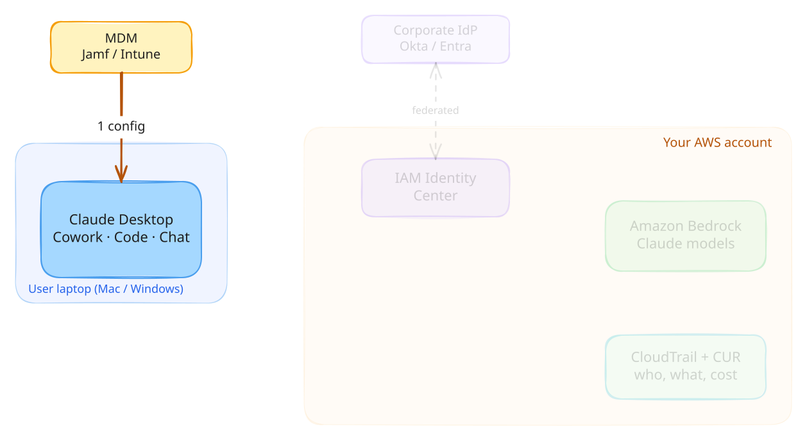
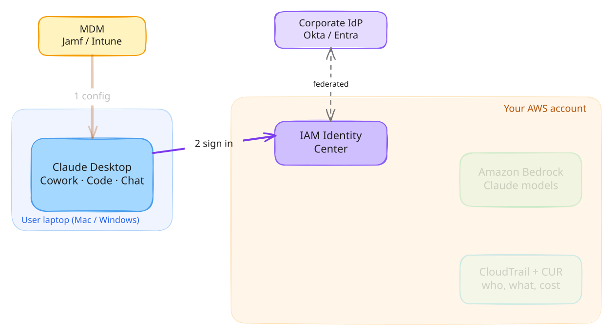
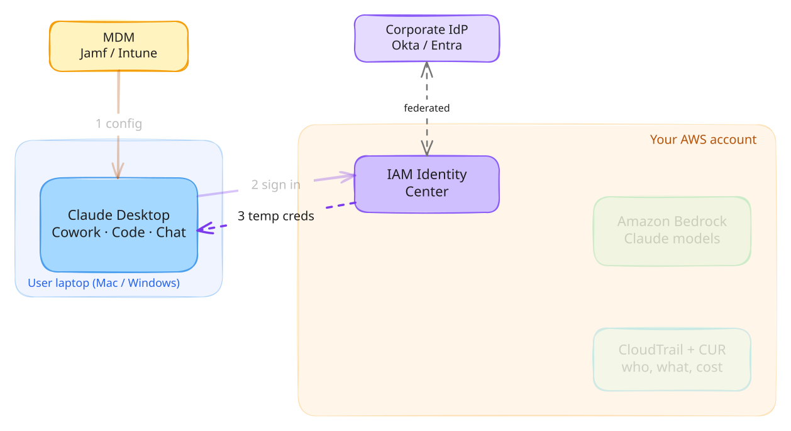
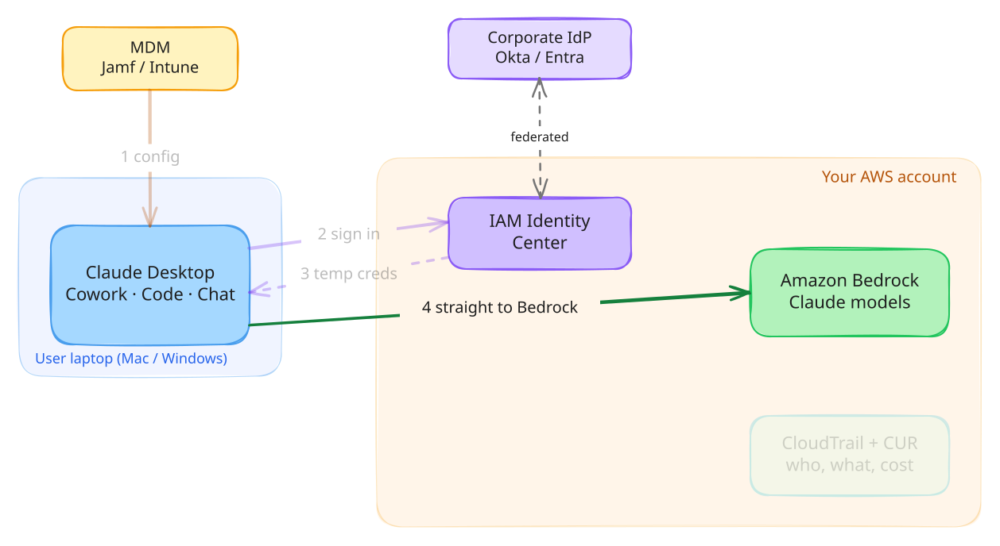
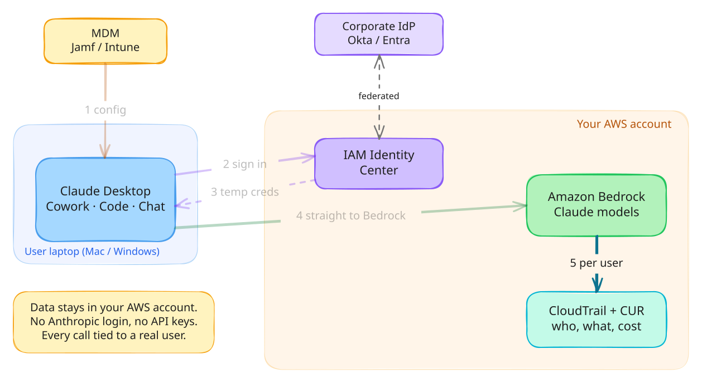

Claude Desktop on Amazon Bedrock · Step 1 of 5
IT pushes the config

What happens
- Jamf or Intune pushes managed settings to the laptop
- Sets the provider to Bedrock, plus region, models, allowed folders and the SSO start URL
- The user has nothing to configure
Why it matters
IT owns the setup. Users can't point the app at another provider.
12345
Claude Desktop on Amazon Bedrock · Step 2 of 5
User signs in with their work identity

What happens
- The app opens the browser to sign in to IAM Identity Center
- Identity Center is federated to Okta or Entra
- No Anthropic account involved
Why it matters
Same SSO, MFA and offboarding as every other AWS app.
12345
Claude Desktop on Amazon Bedrock · Step 3 of 5
The app gets short-lived AWS credentials

What happens
- Sign-in tokens stay in Keychain (Mac) or DPAPI (Windows)
- Each session swaps them for temporary role credentials
- No long-lived access keys on the laptop
Why it matters
Disable the user in the IdP and access ends with the session.
12345
Claude Desktop on Amazon Bedrock · Step 4 of 5
Prompts go straight to Bedrock

What happens
- The laptop calls Bedrock in your account, signed with SigV4
- No Anthropic service in the path
- Optional: a VPC endpoint or LLM gateway in front
Why it matters
Your account, your region, your network controls.
12345
Claude Desktop on Amazon Bedrock · Step 5 of 5
Every call is tied to a real user

What happens
- CloudTrail logs who called which model, and when
- CUR 2.0 breaks cost down per IAM principal, so per user
- Avoid Bedrock API keys: they're shared and break this
Why it matters
Audit and chargeback come built in, with no extra tooling.
12345